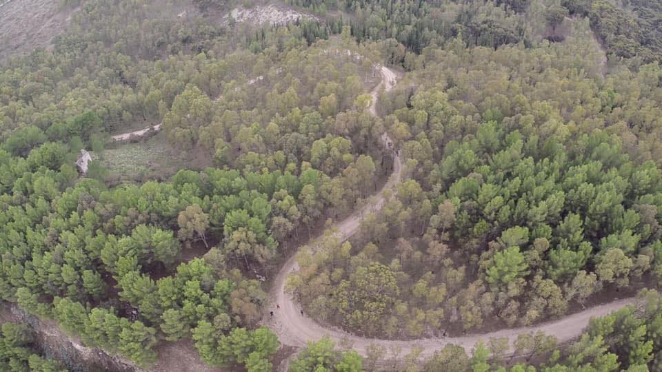

History of Gabara
Gabara, in lower Galilee, was not a planned foundation but a rural settlement that grew from older Iron Age and Hellenistic hamlets scattered along the fertile valleys between Sepphoris and the Mediterranean coast. Its position on local trade routes helped it become a small agricultural center known for grain, olives, and vineyards, tied closely to the daily rhythms of Galilean farming life.
By the early Roman period, Gabara had gained enough importance to be noted by Flavius Josephus, who describes it as influential among the surrounding villages. During the First Jewish–Roman War, however, the town’s prominence brought destruction: in 67 CE, Vespasian’s forces attacked and burned Gabara, killing or dispersing its leaders and effectively ending its political role in the region.
Gallery
Gabara view 1
Gabara view 2
Gabara view 3

Gabara bench